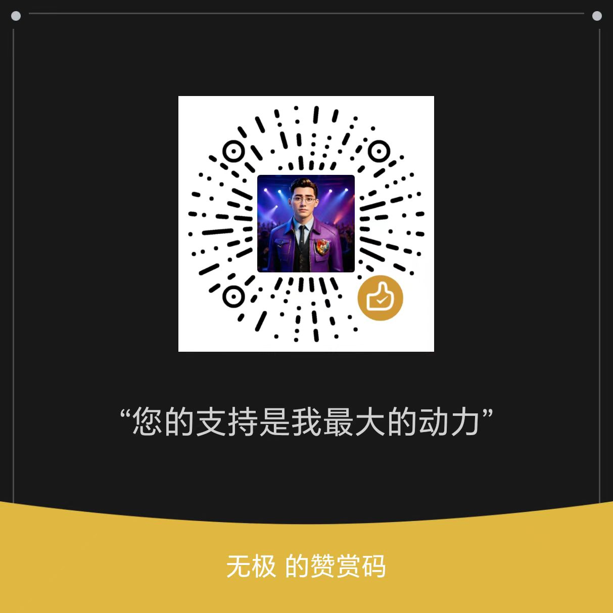

阿极直带专家。一个主 Skill，加 21 个按需调用的专家子代理。
装完重启 Claude Code，专家以 wuji-legion:wuji-* 的名字出现。
/plugin marketplace add AI-wuji/wuji-dev-claude /plugin install wuji-legion@wuji-dev-claude
守卫钩子是可选的，用来拦截批量删除等越界操作，配置示例见仓库的 .claude/settings.example.json。
默认冷态，用到才调，做完释放。同一专家可按互不重叠的范围开多个分身并发。
只读梳理功能怎么运作：入口、调用链、数据流，结论带行号。
读现有模式，给唯一方案、实现地图和构建顺序。
在限定文件范围内实现、修复、重构。
只读审阅，找正确性、安全、边界和回归风险。
补测试、固定行为、按验收标准逐条验收。
只读定位根因，回交证据链和建议修复点。
对已授权目标做只读静态分析，不运行目标程序。
在限定范围内实现或改造界面，审查视觉问题。
把流程整理成 Skill 或插件，写触发描述并校验。
设计并实现本地脚本和小型工作流，定时与常驻交用户批准。
设计调试工作流，写 Python 自定义节点，不擅自下载安装。
剧本、分镜表、美术方案、制作排期，只产出文本。
用本机命令行工具处理音视频，做成片质量检查。
文章、文案、选题、多平台改写，事实带来源。
方案、报价、合同风险标注。不是法律意见。
解析、创建、编辑 Word、PDF、表格、演示。
分析数据，结论带样本量和方法。
在指定来源范围内调研，回交来源、反证和缺口。
只依据指定资料回答，每条带出处，没有就明说没有。
学习路径、课程大纲、练习，可当陪练。
先出映射表再整理，绝不删除。
这些写在每个专家的定义里，不靠自觉。硬边界另由守卫钩子强制。
输入契约缺项，回交 BLOCKED 并列出缺什么，不猜。
换工具、换写法；仍失败查根因；修不了才停。同一方式最多重试两次。
不采信分身自述。作者不验自己。
不付费、不外发私有资料、不删除用户文件、不强杀进程、不写全局配置。
能直办就直办，只需一个专家就调一个，有独立分支才并发。
21 个专家只验证过"缺输入时回交 BLOCKED"。干活的质量没有系统实测，补进去的方法要点也没有实测效果。
方法要点来自官方和开源项目的读后蒸馏。来源、读到的程度和许可记在仓库的 expert-sources.md。部分方向没找到可靠来源，已在更新日志里列出，没有硬补。
